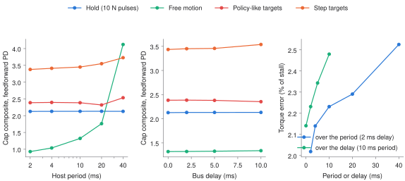

The arms the project wants to reach next expose no torque command. The i2rt YAM takes an impedance frame on CAN at 250 Hz (position, velocity, stiffness, damping and a feedforward torque, the MIT mode of its Damiao motors); Dynamixel arms take a goal position with RAM-writable gains and a current cap over a serial bus at 100 to 500 Hz; Feetech arms take a goal position with gains fixed in EEPROM at 50 to 200 Hz. The question of this phase is what each interface costs a controller that was designed for a 1 kHz torque command, measured on the plant where the record stands (the Panda with the Robotiq 2F-85, protocol v3) so that the interface is the only change, and whether a learned layer on the interface's channels can recover any of it (hypotheses P1 and P2 of ADR 0011). Two protocol additions come with it: a torque-tracking family that measures the interface alone, and a pick-and-place family that includes the pick.
Setup
Profiles. P0 is the torque interface of reports 01 to 18. P1 models MIT mode on CAN: a frame every 4 ms with a 1 ms bus delay, 16-bit position and 12-bit velocity feedback, the gains and a feedforward torque in every frame (Kp up to 6.25 times the servo's nominal stiffness, Kd up to the nominal damping, 12 bits each). P2 models a Dynamixel in position mode: a goal position every 10 ms with a 2 ms delay, 4096 counts per revolution, velocity feedback in steps of 24 mrad/s, P and D gains written per frame, a current cap. P3 models a Feetech servo: a goal position every 20 ms with a 3 ms delay, the same position resolution, velocity in steps of 77 mrad/s, fixed gains, a torque limit. On the Panda the servo's own loop is the tuned PD law at 1 kHz on the quantised measurement with the Panda's torque limits as the cap; the DC-motor layer of the real arms is not part of this ablation.
Model-based interface. At each host instant the upper controller is called with the quantised feedback and returns its impedance frame; the interface advances the reference over the bus delay, passes the frame through on P1 (the part of the command beyond the gain channels' range goes into the feedforward torque) and folds it into the goal position on P2 and P3 so that the servo's torque equals the command at the frame's predicted arrival. This is how the shipped drivers of these arms are used, so it is the classical baseline through every profile.
Controllers and benchmark. The Milestone 10 classical set (the tracking-tuned and the cap-tuned PD, their inverse-dynamics feedforward variants) and the privileged oracle around the tracking-tuned PD, on the in-distribution families, the task families and the compliant 500 N/m surfaces of protocol v3 (16 cases per family), plus the torque-tracking family of protocol v4: a hold reference with a torque program on the upper command (hold, steps of 10 to 30% of the stall torque on one joint, a chirp from 0.5 to 125 Hz at 10%, a pure-torque chirp at 2%), the realised joint torque compared with the command evaluated at the true state at every physics step. The sweep varies the host period (2 to 40 ms at a 2 ms delay) and the bus delay (0 to 10 ms at a 10 ms period) of the P2 structure under the feedforward PD.
Learned interface (Phase 2a). One network per profile (four layers of 256, a history of ten host frames of measured state, realised torque and the goal sent) emitting bounded corrections on the profile's channels (a goal offset within 50 mrad, gain multipliers within 0.5 to 2 where the gains are writable, a feedforward residual within 20% of the limits where the channel exists), applied on top of the model-based interface and exactly equal to it at the start (zero head). Trained by backpropagation through the plant (finite-difference gradients, median clipping) on the loss between the realised torque and the upper command at the true state plus a torque-rate penalty, on hold windows with torque programs and free-space and contact windows under the feedforward PD, 200 iterations of 16 windows of 1 s; selected on the validation cases (eight torque-tracking cases and the hold, free and blocked families under the feedforward PD).
Pick-and-place with a grasp. The block rests on the table; the gripper, baked at a 46 mm opening around the 34 mm block, approaches from 12 cm above, descends to the block's centre, dwells, and the weld activates 0.2 s into the dwell only if the block's centre is within 6 mm laterally and 9 mm along the tool axis of the tool point, at the block's current pose; then lift, carry, place, lift. Grasp success, the block's displacement before the grasp, the tool-block force during the descent and the place metrics of v3 are reported; task success requires the grasp and a placement within 2 cm and 15 degrees.
Probing study. Linear probes from the observation and from every trunk layer of the Milestone 10 two-teacher student, fitted on even validation episodes and tested on odd ones, to the privileged labels the simulator knows: contact, table against wall, the surface normal in the tool frame, the surface stiffness class, the payload mass and the external force magnitude.
Phase 0: what public servo data identifies
Phase 0, identification on the Neural Actuation Dataset (training split; 280 OpenManipulator-X and 80 SO-101 trajectories at 59 and 62 Hz). The XM430's current follows the DC-motor law i = (d V - K_e N ω) / R with R and K_e N consistent with the datasheet's stall current and no-load speed on joints 2 to 5 (joint 1, the base yaw, moves little and its fit is poor); its PWM register is not the firmware's P term alone (the integral and the derivative on an internal velocity estimate enter), so the position loop's gains are taken from the e-manual's conversion and randomised in simulation. The STS3215's load register is the P term on the position error with no visible velocity term. Both report velocity in coarse steps, the resolution the servo profiles P2 and P3 carry.
Servo
Joint
Command register on the position error
R (Ω)
K_e N (V s/rad)
Current fit R²
Implied stall current / no-load speed at 12 V (datasheet 2.3 A / 46 rpm)
Velocity feedback step
XM430-W350 (OpenManipulator-X)
1
3519 PWM/rad (R² 0.82)
7.26
2.07
0.67
1.65 A / 55 rpm
24 mrad/s
XM430-W350 (OpenManipulator-X)
2
625 PWM/rad (R² 0.30)
5.19
2.39
0.98
2.31 A / 48 rpm
24 mrad/s
XM430-W350 (OpenManipulator-X)
3
220 PWM/rad (R² 0.30)
4.98
2.40
0.97
2.41 A / 48 rpm
24 mrad/s
XM430-W350 (OpenManipulator-X)
4
43 PWM/rad (R² 0.51)
4.76
2.38
0.93
2.52 A / 48 rpm
24 mrad/s
XM430-W350 (OpenManipulator-X)
5
1500 PWM/rad (R² 0.50)
5.39
2.46
0.97
2.23 A / 47 rpm
24 mrad/s
STS3215 (SO-101)
1
3893 ‰ duty/rad (R² 0.969)
—
—
—
—
50 steps/s (77 mrad/s)
STS3215 (SO-101)
2
2616 ‰ duty/rad (R² 0.999)
—
—
—
—
50 steps/s (77 mrad/s)
STS3215 (SO-101)
3
2621 ‰ duty/rad (R² 0.998)
—
—
—
—
50 steps/s (77 mrad/s)
STS3215 (SO-101)
4
2850 ‰ duty/rad (R² 0.990)
—
—
—
—
50 steps/s (77 mrad/s)
STS3215 (SO-101)
5
3777 ‰ duty/rad (R² 0.971)
—
—
—
—
50 steps/s (77 mrad/s)
STS3215 (SO-101)
6
1182 ‰ duty/rad (R² 0.661)
—
—
—
—
50 steps/s (77 mrad/s)
The interface ablation
The same classical controllers through the four profiles, the model-based interface mapping every frame (decision 3 of ADR 0011). The first table follows the best classical controller of each family (chosen per profile), the second the feedforward PD alone, the third the privileged oracle, which here is the ceiling under the interface rather than a baseline.
Best classical controller of the family: cap composite per family through each interface profile with the model-based interface (mean over 16 cases; in brackets the ratio to the torque interface; the best classical controller of each family in square brackets).
Group
Family
P0 torque, 1 kHz
P1 MIT mode, 250 Hz
P2 goal position, RAM gains, 100 Hz
P3 goal position, fixed gains, 50 Hz
In-distribution families
Hold (10 N pulses)
1.74 [PD]
1.82 (1.04×) [PD]
2.13 (1.22×) [PD]
2.30 (1.32×) [PD]
In-distribution families
Free motion
0.36 [PD+ff]
0.83 (2.31×) [PD+ff]
1.32 (3.68×) [PD+ff]
2.03 (5.64×) [PD+ff]
In-distribution families
Policy-like targets
2.34 [PD]
2.35 (1.01×) [PD]
2.39 (1.02×) [PD]
2.38 (1.01×) [PD]
In-distribution families
Step targets
3.30 [PD]
3.32 (1.01×) [PD]
3.45 (1.05×) [PD]
3.61 (1.10×) [PD]
In-distribution families
Contact (press, slide)
5.13 [PD cap]
5.16 (1.01×) [PD cap]
5.33 (1.04×) [PD cap]
5.50 (1.07×) [PD cap]
In-distribution families
Blocked target
10.43 [PD cap+ff]
10.56 (1.01×) [PD cap]
10.59 (1.02×) [PD cap+ff]
10.74 (1.03×) [PD cap+ff]
In-distribution families
Task (held out)
4.34 [PD+ff]
4.43 (1.02×) [PD+ff]
4.55 (1.05×) [PD+ff]
4.75 (1.10×) [PD+ff]
Task families (box pushing, pick-and-place)
Box pushing
0.64 [PD]
0.73 (1.14×) [PD cap]
0.79 (1.24×) [PD cap]
1.01 (1.59×) [PD]
Task families (box pushing, pick-and-place)
Pick-and-place
4.57 [PD+ff]
4.64 (1.02×) [PD+ff]
4.77 (1.04×) [PD+ff]
4.91 (1.07×) [PD+ff]
Compliant surface, 500 N/m (held out)
Contact (press, slide)
2.41 [PD cap+ff]
2.47 (1.03×) [PD cap+ff]
2.56 (1.06×) [PD cap+ff]
2.80 (1.16×) [PD cap+ff]
Compliant surface, 500 N/m (held out)
Blocked target
6.52 [PD cap]
6.63 (1.02×) [PD cap]
6.75 (1.03×) [PD cap]
7.00 (1.07×) [PD cap]
Compliant surface, 500 N/m (held out)
Task (held out)
2.70 [PD+ff]
2.81 (1.04×) [PD+ff]
2.93 (1.08×) [PD+ff]
3.09 (1.14×) [PD+ff]
PD (tracking-tuned) + inverse-dynamics feedforward: cap composite per family through each interface profile with the model-based interface (mean over 16 cases; in brackets the ratio to the torque interface; the best classical controller of each family in square brackets).
Group
Family
P0 torque, 1 kHz
P1 MIT mode, 250 Hz
P2 goal position, RAM gains, 100 Hz
P3 goal position, fixed gains, 50 Hz
In-distribution families
Hold (10 N pulses)
1.74
1.82 (1.04×)
2.13 (1.22×)
2.30 (1.32×)
In-distribution families
Free motion
0.36
0.83 (2.31×)
1.32 (3.68×)
2.03 (5.64×)
In-distribution families
Policy-like targets
2.34
2.35 (1.01×)
2.39 (1.02×)
2.38 (1.01×)
In-distribution families
Step targets
3.30
3.32 (1.01×)
3.45 (1.05×)
3.61 (1.10×)
In-distribution families
Contact (press, slide)
5.45
5.52 (1.01×)
5.67 (1.04×)
5.94 (1.09×)
In-distribution families
Blocked target
13.97
14.15 (1.01×)
14.17 (1.01×)
14.15 (1.01×)
In-distribution families
Task (held out)
4.34
4.43 (1.02×)
4.55 (1.05×)
4.75 (1.10×)
Task families (box pushing, pick-and-place)
Box pushing
0.71
0.86 (1.20×)
1.05 (1.47×)
1.15 (1.61×)
Task families (box pushing, pick-and-place)
Pick-and-place
4.57
4.64 (1.02×)
4.77 (1.04×)
4.91 (1.07×)
Compliant surface, 500 N/m (held out)
Contact (press, slide)
2.51
2.58 (1.03×)
2.69 (1.07×)
2.88 (1.15×)
Compliant surface, 500 N/m (held out)
Blocked target
8.56
8.69 (1.01×)
8.59 (1.00×)
8.43 (0.98×)
Compliant surface, 500 N/m (held out)
Task (held out)
2.70
2.81 (1.04×)
2.93 (1.08×)
3.09 (1.14×)
Oracle around the PD (privileged ceiling): cap composite per family through each interface profile with the model-based interface (mean over 16 cases; in brackets the ratio to the torque interface; the best classical controller of each family in square brackets).
Group
Family
P0 torque, 1 kHz
P1 MIT mode, 250 Hz
P2 goal position, RAM gains, 100 Hz
P3 goal position, fixed gains, 50 Hz
In-distribution families
Hold (10 N pulses)
1.74
1.82 (1.04×)
2.13 (1.22×)
2.30 (1.32×)
In-distribution families
Free motion
0.56
1.05 (1.88×)
1.54 (2.76×)
2.27 (4.07×)
In-distribution families
Policy-like targets
2.34
2.35 (1.01×)
2.39 (1.02×)
2.38 (1.01×)
In-distribution families
Step targets
3.30
3.32 (1.01×)
3.45 (1.05×)
3.61 (1.10×)
In-distribution families
Contact (press, slide)
5.13
5.30 (1.03×)
5.18 (1.01×)
5.33 (1.04×)
In-distribution families
Blocked target
7.23
7.41 (1.02×)
5.18 (0.72×)
5.53 (0.77×)
In-distribution families
Task (held out)
3.65
3.76 (1.03×)
3.97 (1.09×)
4.02 (1.10×)
Task families (box pushing, pick-and-place)
Box pushing
0.64
0.73 (1.15×)
0.81 (1.28×)
1.01 (1.59×)
Task families (box pushing, pick-and-place)
Pick-and-place
4.92
4.99 (1.02×)
4.78 (0.97×)
4.94 (1.00×)
Compliant surface, 500 N/m (held out)
Contact (press, slide)
2.38
2.43 (1.02×)
2.45 (1.03×)
2.55 (1.07×)
Compliant surface, 500 N/m (held out)
Blocked target
4.58
4.73 (1.03×)
3.27 (0.71×)
3.66 (0.80×)
Compliant surface, 500 N/m (held out)
Task (held out)
2.01
2.11 (1.05×)
2.24 (1.11×)
2.45 (1.22×)
The torque-tracking family
Torque-tracking family (protocol v4): the realised joint torque against the upper command evaluated at the true state at every physics step (RMS as a fraction of the stall torque), the feedforward PD plus a torque program through the model-based interface of each profile (P0 torque at 1 kHz; P1 MIT mode at 250 Hz; P2 goal position with RAM gains at 100 Hz; P3 goal position with fixed gains at 50 Hz); four cases per program kind: the PD frame alone (hold), steps of 10 to 30% of the stall torque on one joint, a chirp from 0.5 to 125 Hz at 10%, and the chirp as a pure torque command at 2%. The delay is the cross-correlation lag of the programmed joint; the bandwidth the chirp frequency at which the realised amplitude falls below 0.7 of the command.
Profile
Program
Torque error (% of stall)
Delay (ms)
Bandwidth (Hz)
Saturation (%)
Torque rate (Nm/s)
Composite
P0
hold
0.00
—
—
0.0
111
0.04
P0
steps
0.00
0
—
0.0
468
0.19
P0
chirp
0.00
0
125
0.0
373
0.15
P0
pure-torque chirp
0.00
0
125
0.0
133
0.05
P1
hold
0.43
—
—
0.0
156
0.15
P1
steps
0.75
1
—
0.0
501
0.45
P1
chirp
1.29
2
125
0.0
648
0.72
P1
pure-torque chirp
0.57
2
106
0.0
228
0.41
P2
hold
2.20
—
—
0.0
512
0.64
P2
steps
2.17
2
—
0.0
675
0.90
P2
chirp
2.53
5
30
0.0
696
1.31
P2
pure-torque chirp
2.03
4
49
0.0
513
0.96
P3
hold
2.29
—
—
0.0
494
0.66
P3
steps
2.38
3
—
0.0
800
1.10
P3
chirp
2.82
10
10
0.0
783
1.85
P3
pure-torque chirp
2.09
5
29
0.0
588
1.13
Host period and bus delay

Hypothesis P1, the descriptive curve: the feedforward PD through a goal-position interface with RAM gains (the P2 structure) over the host period at a 2 ms bus delay (left) and over the bus delay at a 10 ms period (middle), cap composite per free-space family (16 cases each); right, the torque-tracking family's realised-torque error over the same sweeps.
Effective stiffness
Blocked family: contact stiffness (N/m, mean normal force per metre of actual tool error while the reference is inside the surface) and the excess force above the 15 N cap, per profile; the ratio to the torque interface is the realised fraction of the commanded impedance.
Error floor of the model-based interface on 16 fixed hold windows with torque programs (realised-torque error, % of stall, RMS): the profile as is, and with one of its limits removed at a time. What remains with exact feedback, a 1 ms period and no delay is the part a correction on the profile's channels could remove; the rest is the servo acting on its own quantised measurement between host frames.
Model-based interface with
P1 MIT mode, 250 Hz
P2 goal position, RAM gains, 100 Hz
P3 goal position, fixed gains, 50 Hz
as is
1.55
3.17
3.97
exact velocity feedback
1.53
3.16
3.85
exact position and velocity feedback
1.47
2.38
3.28
no bus delay
0.82
2.58
3.33
1 ms host period
1.39
2.75
3.20
1 ms period, no delay
0.49
2.00
2.19
all removed
0.02
0.00
0.00
The learned interface
Learned interface (Phase 2a) on the validation cases (8 torque-tracking, hold, free and blocked under the feedforward PD): the mean cap composite and the torque-tracking metrics of the model-based warm start and of the best checkpoint by validation; the pre-registered criterion asks for an error ratio of 0.5 at a rate ratio below 1.5.
Pick-and-place with a grasp (protocol v4, torque interface, 16 cases with payloads of 0, 1 and 2 kg at the tool): the weld activates only if the block's centre is within 6 mm laterally and 9 mm along the tool axis at the grasp instant. The students are pooled over three seeds.
Controller
Grasp (%)
Pre-grasp disturbance (mm)
Grasp force (N)
Place error (mm)
Place force (N)
Pick success (%)
Push success (%)
PD, tracking-tuned
38
0.7
0.4
70
3.8
38
31
PD, cap-tuned
31
0.7
0.6
79
3.3
31
31
PD, tracking-tuned, + feedforward
44
0.7
0.3
65
3.8
44
31
PD, cap-tuned, + feedforward
31
0.7
0.6
79
3.3
31
31
Oracle (ceiling)
38
0.7
0.4
70
3.8
38
31
Two-teacher student (3 seeds)
67
1.1
5.8
39
4.6
67
52
No static figure for this viewer; the interactive view needs JavaScript.
Pick-and-place with a grasp, real time, case pick-test-002, with the 2 kg tool payload of its instance: the lowest-index such case among the 4 of 16 where the feedforward PD misses the grasp and the student takes it. The gray sphere is the commanded tool point; the force plot is the tool-block contact force. The PD sags under the unmodelled payload (10 to 19 mm over the family) and the block's centre is outside the 6 mm by 9 mm tolerance at the grasp instant, so the weld never activates and the block stays; the student infers the payload from the history, grasps, lifts, carries and places. The gray sphere is the commanded tool point; the metrics under each view accumulate causally; the plot cursor follows the video. Video (MP4)Data (JSON)
No static figure for this viewer; the interactive view needs JavaScript.
The same family without a tool payload, real time, case pick-test-001 (the lowest-index case without payload that the PD grasps): the PD arrives within 1 mm and grasps; the student arrives with 4 to 6 mm of lateral error, its pads brush the block during the descent (6 to 9 N on the block) and its contact law yields, so it stops 18 mm above the grasp height and never takes the block. The contact compliance that wins the blocked family loses a grasp that touches its object on the way in. The gray sphere is the commanded tool point; the metrics under each view accumulate causally; the plot cursor follows the video. Video (MP4)Data (JSON)
What the representations encode
Probing study: linear probes fitted on even validation episodes and tested on odd ones (surface, free-space, compliant-surface and payload cases), from the observation and from every trunk layer of the two-teacher student (seeds 0 and 1). Balanced accuracy for classes (chance 0.5), R² for regressions (0 is the mean predictor; negative is worse).
Controller
Probe from
contact (bal. acc.)
detected within 50 ms
normal in the tool frame (R²)
2 kN/m surface (bal. acc.)
500 N/m surface (bal. acc.)
payload mass (R²)
external force (R²)
contact force (R²)
student
observation
0.77
0.63
0.39
0.60
0.59
-0.75
-0.72
-0.71
student
layer1
0.80
0.35
-0.73
0.55
0.51
-0.81
-0.42
-0.45
student
layer2
0.77
0.35
-0.81
0.54
0.51
-1.52
-0.27
-0.23
student_s1
observation
0.79
0.66
0.34
0.57
0.59
-1.17
-0.06
-0.05
student_s1
layer1
0.80
0.43
-0.56
0.49
0.58
-2.69
-0.25
-0.27
student_s1
layer2
0.77
0.29
-0.31
0.49
0.52
-1.49
0.16
0.17
Summary over groups
The standard sections below show profile P1 (the YAM's interface); the ablation across profiles is in the tables above.
Means over all cases of a group (every regime of the group pooled). The composites are tuning and selection objectives, not research signals; the cap columns follow ADR 0007.
In-distribution families: primary metrics (mean over cases; paired difference against the best classical controller of each family, starred when the 95% bootstrap interval excludes zero).
Excess contact force above 30 N (mean while in contact) (N)
2.41
3.71 (1.3*)
2.41 (0)
3.3 (0.88*)
2.44 (0.023)
2.09 (-0.33)
Contact (tilt, depth, slide)
Excess contact force above the 15 N cap (mean while in contact) (N)
9.11
12.3 (3.2*)
9.11 (0)
11.6 (2.5*)
8.76 (-0.34*)
4.71 (-4.4*)
Contact (tilt, depth, slide)
Peak normal force (N)
267
265 (-2.7)
267 (0)
268 (0.76)
299 (31*)
265 (-2.6)
Contact (tilt, depth, slide)
Peak of the 20 ms low-pass filtered normal force (sustained force) (N)
93.6
95.4 (1.8)
93.6 (0)
96 (2.4)
103 (9.2*)
92 (-1.6)
Contact (tilt, depth, slide)
Feasible-direction tool error (m)
0.00841
0.00805 (-0.00036)
0.00841 (0)
0.00835 (-5.9e-05)
0.00849 (7.4e-05)
0.0124 (0.004*)
Contact (tilt, depth, slide)
Press-phase force deficit below the press floor (5 N under protocol v2, 7 N under v3) (N)
0.363
0.123 (-0.24)
0.363 (0)
0.13 (-0.23)
0.434 (0.07)
0.223 (-0.14)
Contact (tilt, depth, slide)
Contact losses of 5 ms or more during contact phase (-)
20.2
13.8 (-6.5*)
20.2 (0)
13.9 (-6.4*)
22.2 (2)
51.8 (32*)
Contact (tilt, depth, slide)
Contact losses of 5 ms or more per second of press phase (1/s)
9.02
6.07 (-3*)
9.02 (0)
6.12 (-2.9*)
9.94 (0.92)
21.5 (12*)
Contact (tilt, depth, slide)
Contact stiffness: mean normal force per metre of actual tool error along the inward normal while the reference is inside and the tool in contact (after the first 0.3 s of contact) (N/m)
2.43e+03
2.78e+03 (3.5e+02*)
2.43e+03 (0)
2.73e+03 (3e+02*)
2.39e+03 (-41*)
1.55e+03 (-8.8e+02*)
Blocked reference
Excess contact force above 30 N (mean while in contact) (N)
12.2
26.8 (15*)
12.2 (0)
25.7 (14*)
11.3 (-0.87*)
3.69 (-8.5*)
Blocked reference
Excess contact force above the 15 N cap (mean while in contact) (N)
24.3
40.8 (17*)
24.3 (0)
39.6 (15*)
23.1 (-1.2*)
12.7 (-12*)
Blocked reference
Peak normal force (N)
244
230 (-15*)
244 (0)
220 (-24*)
226 (-19*)
229 (-15*)
Blocked reference
Peak of the 20 ms low-pass filtered normal force (sustained force) (N)
77.2
81.7 (4.5)
77.2 (0)
78.2 (1.1)
72.3 (-4.9*)
75.5 (-1.7*)
Blocked reference
Blocked: mean tangential distance of the tool from its first-contact point while the reference is inside the surface (m)
0.018
0.0185 (0.00048*)
0.018 (0)
0.0182 (0.00016)
0.0178 (-0.00022*)
0.00684 (-0.011*)
Blocked reference
Blocked: fraction of the time in contact with the tool moving faster than 1 cm/s while the reference is inside the surface (-)
0.341
0.338 (-0.0036)
0.341 (0)
0.336 (-0.0053)
0.336 (-0.0059*)
0.214 (-0.13*)
Blocked reference
Apparent stiffness: mean normal force per metre of reference depth while blocked (after the first 0.3 s of contact) (N/m)
1e+03
1.44e+03 (4.4e+02*)
1e+03 (0)
1.4e+03 (4e+02*)
970 (-35*)
726 (-2.8e+02*)
Blocked reference
Contact stiffness: mean normal force per metre of actual tool error along the inward normal while the reference is inside and the tool in contact (after the first 0.3 s of contact) (N/m)
1.02e+03
1.46e+03 (4.4e+02*)
1.02e+03 (0)
1.42e+03 (4.1e+02*)
986 (-30*)
722 (-2.9e+02*)
Blocked reference
Recovery after a blocked reference returns (s)
0
0 (0)
0 (0)
0 (0)
0 (0)
1.17 (1.2*)
Blocked reference
Feasible-direction tool error (m)
0.0212
0.0157 (-0.0055*)
0.0212 (0)
0.0163 (-0.0049*)
0.0222 (0.001*)
0.0134 (-0.0078*)
Task sequence
Excess contact force above 30 N (mean while in contact) (N)
2.56
2.87 (0.32*)
1.42 (-1.1*)
2.56 (0)
1.06 (-1.5*)
0.79 (-1.8*)
Task sequence
Excess contact force above the 15 N cap (mean while in contact) (N)
10.5
11 (0.51*)
7.62 (-2.9*)
10.5 (0)
7.05 (-3.4*)
2.83 (-7.6*)
Task sequence
Peak normal force (N)
109
121 (12*)
177 (68*)
109 (0)
110 (0.84)
123 (14*)
Task sequence
Peak of the 20 ms low-pass filtered normal force (sustained force) (N)
39.2
43.2 (4*)
55.8 (17*)
39.2 (0)
37.9 (-1.3)
42.6 (3.4*)
Task sequence
Feasible-direction tool error (m)
0.011
0.0111 (0.00011)
0.0153 (0.0043*)
0.011 (0)
0.0155 (0.0045*)
0.0113 (0.00037*)
Task sequence
Press-phase force deficit below the press floor (5 N under protocol v2, 7 N under v3) (N)
0.0433
0.0178 (-0.026)
0.563 (0.52*)
0.0433 (0)
0.635 (0.59*)
0.0185 (-0.025)
Task sequence
Contact losses of 5 ms or more per second of press phase (1/s)
6.12
6.06 (-0.06)
11.1 (4.9*)
6.12 (0)
10.3 (4.2*)
21.1 (15*)
Selection: Hold, Position RMSE (rad); n = 16 cases. Mean with 95% bootstrap CI (1000 resamples); difference vs Best classical controller of the family is paired by case, failed cases dropped from the pair.
In-distribution families: per-case values; dots are cases, the tick the mean, the bar its 95% bootstrap interval. Data (JSON)
Compliant surface, 500 N/m (held out)
Compliant surface, 500 N/m (held out): primary metrics (mean over cases; paired difference against the best classical controller of each family, starred when the 95% bootstrap interval excludes zero).
Excess contact force above 30 N (mean while in contact) (N)
0.147
0.195 (0.049*)
0.163 (0.017)
0.152 (0.0052)
0.147 (0)
0.1 (-0.046)
Contact (tilt, depth, slide)
Excess contact force above the 15 N cap (mean while in contact) (N)
4.39
5.79 (1.4*)
4.7 (0.31*)
5.39 (1*)
4.39 (0)
0.611 (-3.8*)
Contact (tilt, depth, slide)
Peak normal force (N)
34.2
33 (-1.2)
33.9 (-0.31)
31.3 (-2.9*)
34.2 (0)
35.1 (0.91)
Contact (tilt, depth, slide)
Peak of the 20 ms low-pass filtered normal force (sustained force) (N)
27.3
27.9 (0.63)
27.5 (0.19)
27.2 (-0.11)
27.3 (0)
28.4 (1.1)
Contact (tilt, depth, slide)
Feasible-direction tool error (m)
0.00796
0.00725 (-0.00071)
0.00791 (-4.1e-05)
0.00734 (-0.00062)
0.00796 (0)
0.0145 (0.0065)
Contact (tilt, depth, slide)
Press-phase force deficit below the press floor (5 N under protocol v2, 7 N under v3) (N)
0.586
0.452 (-0.13)
0.568 (-0.018)
0.467 (-0.12)
0.586 (0)
0.576 (-0.01)
Contact (tilt, depth, slide)
Contact losses of 5 ms or more during contact phase (-)
1.62
0.75 (-0.88)
1.62 (0)
0.75 (-0.88)
1.62 (0)
1.25 (-0.38)
Contact (tilt, depth, slide)
Contact losses of 5 ms or more per second of press phase (1/s)
0.67
0.316 (-0.35)
0.67 (0)
0.316 (-0.35)
0.67 (0)
0.555 (-0.11)
Contact (tilt, depth, slide)
Contact stiffness: mean normal force per metre of actual tool error along the inward normal while the reference is inside and the tool in contact (after the first 0.3 s of contact) (N/m)
4.2e+03
4.77e+03 (5.7e+02*)
4.48e+03 (2.8e+02*)
4.49e+03 (2.9e+02*)
4.2e+03 (0)
1.47e+03 (-2.7e+03*)
Blocked reference
Excess contact force above 30 N (mean while in contact) (N)
3.36
6.51 (3.1*)
3.36 (0)
6.25 (2.9*)
3.08 (-0.29*)
0.744 (-2.6*)
Blocked reference
Excess contact force above the 15 N cap (mean while in contact) (N)
12.4
17.9 (5.5*)
12.4 (0)
17.4 (5*)
11.9 (-0.52*)
7.22 (-5.2*)
Blocked reference
Peak normal force (N)
40.8
49.3 (8.6*)
40.8 (0)
48.2 (7.5*)
38.8 (-1.9*)
36 (-4.8*)
Blocked reference
Peak of the 20 ms low-pass filtered normal force (sustained force) (N)
39.1
47.5 (8.5*)
39.1 (0)
46.4 (7.3*)
37.1 (-2*)
33.3 (-5.7*)
Blocked reference
Blocked: mean tangential distance of the tool from its first-contact point while the reference is inside the surface (m)
0.018
0.0176 (-0.0004)
0.018 (0)
0.0174 (-0.00062)
0.0176 (-0.00037*)
0.00759 (-0.01*)
Blocked reference
Blocked: fraction of the time in contact with the tool moving faster than 1 cm/s while the reference is inside the surface (-)
0.408
0.418 (0.0095)
0.408 (0)
0.422 (0.013)
0.416 (0.0081*)
0.309 (-0.099*)
Blocked reference
Apparent stiffness: mean normal force per metre of reference depth while blocked (after the first 0.3 s of contact) (N/m)
733
885 (1.5e+02*)
733 (0)
867 (1.3e+02*)
710 (-23*)
607 (-1.3e+02)
Blocked reference
Contact stiffness: mean normal force per metre of actual tool error along the inward normal while the reference is inside and the tool in contact (after the first 0.3 s of contact) (N/m)
922
1.18e+03 (2.5e+02*)
922 (0)
1.15e+03 (2.3e+02*)
890 (-32*)
733 (-1.9e+02)
Blocked reference
Recovery after a blocked reference returns (s)
0
0 (0)
0 (0)
0 (0)
0 (0)
1.06 (1.1*)
Blocked reference
Feasible-direction tool error (m)
0.0194
0.0141 (-0.0053*)
0.0194 (0)
0.0145 (-0.0049*)
0.0203 (0.00089*)
0.0128 (-0.0066*)
Task sequence
Excess contact force above 30 N (mean while in contact) (N)
0.194
0.242 (0.048*)
0.0642 (-0.13*)
0.194 (0)
0.0323 (-0.16*)
0.0567 (-0.14*)
Task sequence
Excess contact force above the 15 N cap (mean while in contact) (N)
5.01
5.26 (0.26*)
3.69 (-1.3*)
5.01 (0)
3.47 (-1.5*)
0.627 (-4.4*)
Task sequence
Peak normal force (N)
28.5
30.5 (2.1*)
27.7 (-0.8*)
28.5 (0)
25.7 (-2.7*)
30.4 (1.9*)
Task sequence
Peak of the 20 ms low-pass filtered normal force (sustained force) (N)
26.5
28.4 (1.8*)
25.9 (-0.64)
26.5 (0)
23.9 (-2.6*)
27.9 (1.4*)
Task sequence
Feasible-direction tool error (m)
0.0111
0.0111 (2.4e-05)
0.0152 (0.0042*)
0.0111 (0)
0.0156 (0.0045*)
0.0113 (0.0002)
Task sequence
Press-phase force deficit below the press floor (5 N under protocol v2, 7 N under v3) (N)
0
0 (0)
0.379 (0.38)
0 (0)
0.422 (0.42)
0.318 (0.32)
Task sequence
Contact losses of 5 ms or more per second of press phase (1/s)
0.382
0.322 (-0.059)
0.816 (0.43*)
0.382 (0)
0.628 (0.25*)
1.39 (1*)
Selection: Contact (tilt, depth, slide), Excess contact force above 30 N (mean while in contact) (N); n = 8 cases. Mean with 95% bootstrap CI (1000 resamples); difference vs Best classical controller of the family is paired by case, failed cases dropped from the pair.
Compliant surface, 500 N/m (held out): per-case values; dots are cases, the tick the mean, the bar its 95% bootstrap interval. Data (JSON)
Task families (box pushing, pick-and-place)
Task families (box pushing, pick-and-place): primary metrics (mean over cases; paired difference against the best classical controller of each family, starred when the 95% bootstrap interval excludes zero).
Task success (push: errors below 2 cm and yaw below 15 degrees; pick: grasped, placed within 2 cm and tilted below 15 degrees) (-)
0.312
0.312 (0)
0.312 (0)
0.312 (0)
0.312 (0)
0.312 (0)
Box pushing
Push: error of the box displacement along the push direction against 10 cm (m)
0.00381
0.00338 (-0.00044)
0.00381 (0)
0.00336 (-0.00045)
0.00378 (-3.2e-05)
0.00338 (-0.00044)
Box pushing
Push: lateral displacement of the box (m)
0.0131
0.0133 (0.0002)
0.0131 (0)
0.0135 (0.00036*)
0.0134 (0.00024*)
0.0133 (0.0002)
Box pushing
Push: box yaw change (rad)
0.351
0.343 (-0.0075)
0.351 (0)
0.346 (-0.0042)
0.354 (0.0038)
0.343 (-0.0075)
Box pushing
Peak of the 20 ms filtered normal force on the object (N)
1.75
1.75 (-0.0027)
1.75 (0)
1.73 (-0.022)
1.75 (-0.0075)
1.75 (-0.0027)
Box pushing
Excess contact force above the 15 N cap (mean while in contact) (N)
0
0 (0)
0 (0)
0 (0)
0 (0)
0 (0)
Box pushing
Torque rate RMS (Nm/s)
342
394 (52*)
342 (0)
706 (3.6e+02*)
674 (3.3e+02*)
394 (52*)
Pick-and-place
Task success (push: errors below 2 cm and yaw below 15 degrees; pick: grasped, placed within 2 cm and tilted below 15 degrees) (-)
0.438
0.375 (-0.062)
0.312 (-0.12)
0.438 (0)
0.312 (-0.12)
0.375 (-0.062)
Pick-and-place
Pick: the block was inside the fingertip gap at the grasp instant (-)
0.438
0.375 (-0.062)
0.312 (-0.12)
0.438 (0)
0.312 (-0.12)
0.375 (-0.062)
Pick-and-place
Pick: block displacement before the grasp instant (m)
0.000726
0.000726 (1.1e-08)
0.00073 (4.5e-06)
0.000726 (0)
0.00073 (4.6e-06)
0.000726 (1.1e-08)
Pick-and-place
Pick: peak of the 20 ms filtered tool-block force before the grasp (N)
0.349
0.353 (0.0036)
0.644 (0.29)
0.349 (0)
0.58 (0.23)
0.353 (0.0036)
Pick-and-place
Place: horizontal error of the block against the target at the end (m)
0.0647
0.0703 (0.0056)
0.0785 (0.014*)
0.0647 (0)
0.0785 (0.014*)
0.0703 (0.0056)
Pick-and-place
Place: tilt of the block from upright at the end (rad)
0
0 (0)
0 (0)
0 (0)
0 (0)
0 (0)
Pick-and-place
Place: peak of the 20 ms filtered block-table force during placing (N)
3.8
3.79 (-0.0061)
3.28 (-0.52*)
3.8 (0)
3.3 (-0.5*)
3.79 (-0.0061)
Pick-and-place
Pick: joint tracking RMSE during the lift after the release (rad)
0.0098
0.0101 (0.00027*)
0.0167 (0.0069*)
0.0098 (0)
0.0163 (0.0065*)
0.0101 (0.00027*)
Pick-and-place
Torque rate RMS (Nm/s)
332
317 (-14*)
286 (-46*)
332 (0)
306 (-26*)
317 (-14*)
Selection: Box pushing, Position RMSE (rad); n = 16 cases. Mean with 95% bootstrap CI (1000 resamples); difference vs Best classical controller of the family is paired by case, failed cases dropped from the pair.
Task families (box pushing, pick-and-place): per-case values; dots are cases, the tick the mean, the bar its 95% bootstrap interval. Data (JSON)
Findings
Phase 0: the servo classes are identifiable from public telemetry to the extent the interface model needs. On the Dynamixel XM430 the motor current follows the DC-motor law with a winding resistance of 4.8 to 5.4 ohm and a back-EMF constant of 2.4 V s/rad at the joint on four of five joints (R² 0.93 to 0.98), which imply a stall current of 2.2 to 2.5 A and a no-load speed of 47 to 48 rpm against the datasheet's 2.3 A and 46 rpm; the firmware's position loop is not separable at 59 Hz because its integral and derivative terms act on an internal velocity estimate. On the Feetech STS3215 the load register is the P term on the position error (2600 to 3900 per mille of duty per radian, R² 0.97 to 0.999 on the arm joints) with no visible velocity term. Both report velocity in coarse steps (24 and 77 mrad/s), which is what the profiles carry.
The interface ablation: tracking and contact survive every profile, smoothness does not. Through the model-based interface the best classical controller keeps its tracking on every family (hold 8.1 to 8.2 mrad across the four profiles, free motion 4.9, 4.9, 5.0 and 6.4 mrad, policy-like targets 43 to 45 mrad, steps 36 to 42 mrad) and its contact behaviour (press-and-slide 9.1 to 9.3 N above the cap at every profile, blocked 23 to 24 N, the realised contact stiffness 985 to 1016 N/m against 984 at P0, so the realised fraction of the commanded impedance is 1.00 to 1.03). What changes is the torque rate: 115 Nm/s in free motion at P0, 587 at P1, 1074 at P2, 1710 at P3, and alike on every family. The servo acts on its own quantised velocity feedback (15, 24 and 77 mrad/s steps times a damping of up to 50 Nm s/rad), so the chatter is the interface's, not the controller's. The cap composites therefore grow with the profile where the tracking term is small: hold 1.74, 1.82, 2.13, 2.30; free motion 0.36, 0.83, 1.32, 2.03; policy-like 2.34 to 2.39; steps 3.30 to 3.61. Pre-registered criterion (ii), P1 within 10% of P0 on the free-space composites, is met on hold, policy-like targets and steps (+5%, +0% and +1%) and missed on free motion (+130%), through the torque-rate term alone; P2 and P3 miss free motion by the same mechanism and stay within their 25% and 50% bounds on the other three. No controller diverges on any profile. The privileged oracle keeps its ceiling through P1 (blocked 7.41 against 7.23, 12.7 N above the cap on both) and, through the goal-position profiles, holds blocked targets with less excess force than on the torque interface (2.9 and 3.3 N above the cap at P2 and P3) at a lower realised stiffness (411 against 726 N/m) and a deeper yield (28 against 24 mrad): folded into a goal with the servo's spring and its quantised damping between frames, the impedance law comes out softer than commanded. The ceiling is not monotone in the interface, and the oracle's first rows through the profiles, taken while its frame path still advanced its reference once per frame, were discarded (ADR 0011 amendment).
The torque-tracking family separates the profiles the way the bus does. The realised torque follows the feedforward PD's command within 0.4 to 1.3% of the stall torque at P1 (delay 1 to 2 ms, chirp bandwidth above 100 Hz), within 2.0 to 2.5% at P2 (delay 2 to 5 ms, bandwidth 30 to 49 Hz) and within 2.1 to 2.8% at P3 (delay 3 to 10 ms, bandwidth 10 to 29 Hz); the pure-torque chirp, a command without a spring to hold between frames, is realised at P2 and P3 only through the servo's own stiffness around a goal offset and keeps a bandwidth of 29 to 49 Hz.
Period and delay: the hold matters beyond 20 ms, the delay hardly at all. Over the host period of the P2 structure the free-motion composite goes 0.93, 1.04, 1.32, 1.76 and 4.12 at 2, 4, 10, 20 and 40 ms (4.9 mrad up to 10 ms, 6.7 at 20, 44 at 40, where the policy-like targets also break at 68 mrad), hold stays at 2.13 and blocked at 14.2 up to 20 ms; over the bus delay of 0 to 10 ms at a 10 ms period every composite moves by less than 4% (free motion 4.9 to 5.3 mrad). The torque-tracking error grows from 2.0 to 2.5% across both sweeps, its delay follows the bus delay.
The error floor of the model-based interface is the servo's, and the learned interface finds nothing below it. On hold windows with torque programs the model-based interface realises the command within 1.6, 3.2 and 4.0% of the stall torque at P1, P2 and P3; removing the bus delay or the hold one at a time leaves 0.8 to 1.4% at P1, removing both leaves 0.5% (2.0 and 2.2% at P2 and P3), and only exact feedback as well brings it to zero. On free-space windows the hold is the larger term (P1 5.5% as is, 3.2% without the delay, 4.6% at a 1 ms period, 0.5% with both removed). A scan of constant corrections on the interface's channels (goal offsets of 2 to 4 mrad, damping multipliers of 0.7 to 1.5) raises the loss in every direction from the model-based point. Trained by backpropagation through the plant, the learned interface's torque-tracking error on the validation cases is worse than the model-based warm start's on every profile (P1 0.7% to 1.3%, P2 2.0% to 3.4%, P3 2.0% to 2.2%); its validation mean improves by at most 1% through a lower torque rate and the blocked family. Pre-registered criterion (i), halving the error at no more than 1.5 times the rate, is not met on the Panda ablation: with the reference advanced to the middle of the hold the model-based interface is at the floor that the servo's own loop sets between host frames.
The pick with a grasp discriminates controllers by what they do before the grasp. On the torque interface the feedforward PD grasps 7 of 16 blocks (the tracking-tuned PD 6, the cap-tuned 5, the oracle 6) and the two-teacher student 10.7 of 16 on average over three seeds. The PD misses every case with the 2 kg tool payload: it sags 10 to 19 mm below and 10 mm beside the commanded grasp point, outside the 6 mm by 9 mm tolerance, with the block undisturbed (0.7 mm) and untouched. The student takes every 1 and 2 kg case and misses four of five cases without payload: it arrives with 4 to 6 mm of lateral error, its pads brush the block during the descent (6 to 9 N on the block, 1 to 2 mm of displacement), and the contact law that wins the blocked family yields, so it stops 18 mm above the grasp height. Through the profiles the classical grasp rate is unchanged (7 of 16 at every profile) and push success falls at P3 (5 to 2 of 16 for the feedforward PD).
The two-layer student's representations encode contact and little else. Linear probes from the trunk layers of the two-teacher student decode contact at 0.77 to 0.80 balanced accuracy, the observation itself at 0.77 to 0.79; the surface normal in the tool frame is decodable from the observation (R² 0.34 to 0.39) and not from the layers (negative R²); the stiffness classes, the payload and the external force are at chance from both. With a 2 by 128 trunk the student keeps the contact cue it was given and builds no linear representation of geometry, stiffness or load; the deeper host-rate students of Phase 2b are probed next.
Caveats and failures
The ablation changes the interface only: the servo's position loop is abstracted as the tuned PD in torque units with the Panda's limits as the cap; the DC-motor layer of the real arms (back-EMF, winding resistance, gearbox friction, dead zone) is not modelled here and enters with the robots of Phase 3.
The host periods and bus delays are the shipped drivers' rates and packet-size estimates, not measurements; the sweep covers the plausible range.
The servo's velocity feedback is assumed to be the velocity its own loop uses, at the resolution the bus reports (the Dynamixel's reported velocity is its internal estimate); a firmware that filters its velocity estimate would chatter less than modelled.
Sixteen cases per family, one seed per learned interface; the torque-tracking family has four cases per program kind.
Next steps
The host-rate students of Phase 2b (four layers of 256, decisions at every host frame) are distilled through the three profiles from the oracle and the ideal-robot labels and probed layer by layer (report 21).
The torque-rate growth through the profiles is a property of the servo's velocity estimate; a profile parameter for a filtered firmware estimate (or a measured one, when hardware is allowed) would say how much of it is real. The classical gains re-tuned per profile (phase1_tune.sh) say whether a softer damping recovers the composite.
The YAM (report 20): the same protocol on the arm whose interface is P1, with the gains re-tuned through it and a host-rate student; then the Koch arm on the Dynamixel profile with the identified XM430 constants scaled to its XL servos.
The pick family's zero-payload losses of the student are a contact-law question: a grasp approach should not yield to a 6 N brush against its object. A task-conditioned mode or a smaller press floor during approaches is the natural fix and belongs to the sustained-contact round proposed in the context document.